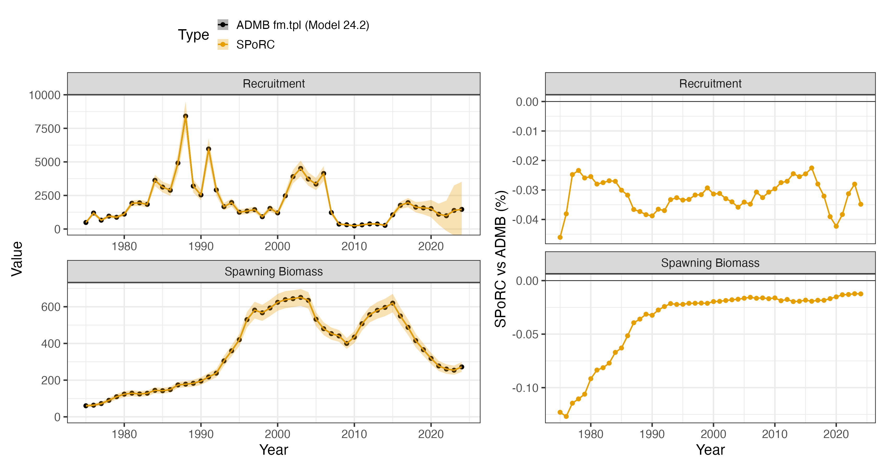
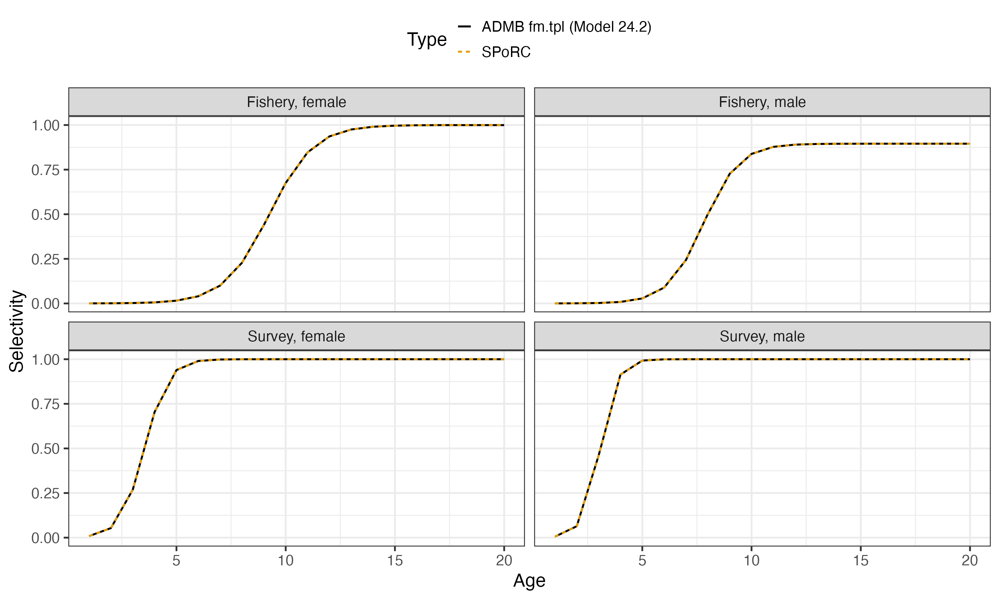

Case Study: Bering Sea and Aleutian Islands Northern Rock Sole
ac_bsai_northern_rock_sole_case_study.RmdOverview
This case study reproduces the 2024 Bering Sea and Aleutian Islands
northern rock sole assessment, Model 24.2, in SPoRC. The
assessment runs on the flatfish model fm.tpl.
The model is single region, single season, two sex, with one fishery fleet and one survey:
| Source | Years | Observations | Likelihood |
|---|---|---|---|
| Catch | 1975–2024 | 50 | Lognormal, weight 300 |
| Bottom trawl survey biomass | 1982–2024 | 42 | Lognormal |
| Fishery age compositions | 1979–2023 | 42 | Multinomial, joint across sexes |
| Survey age compositions | 1979–2023 | 44 | Multinomial, joint across sexes |
Ages run to , the plus group, and years to . Both surveys’ 2020 year is absent, so the index and the compositions each skip it.
Two sexes is what makes this assessment different from the other single region case studies here, and it shows up in four places.
Natural mortality is sex specific and estimated, and , with a lognormal prior on the female’s only.
Initial numbers at age are free and estimated separately for each sex. The assessment writes
so one level is shared and each sex carries its own deviations . Those deviations are penalized about zero, and separately the two sexes are compared to each other by . The penalty is a statement about how far apart the sexes’ initial age structures may sit, which is not the same statement as how variable each one is: initial numbers at age carry the exploitation the stock had already seen before as well as year-class strength, and with sex specific selectivity and mortality the two sexes need not have departed from equilibrium by the same amount.
Fishery selectivity is logistic in both parameters of both sexes, varying annually, with the male curve scaled by a constant:
with
(male_sel_offset) estimated at
,
so the male curve tops out at
rather than one. Survey selectivity is time invariant and its male
parameters are multiplicative offsets on the female’s,
and
.
Both curves stop at age 17. The assessment’s nselages
evaluates the logistic through age 17 and holds ages 18 to 20 at the
age-17 value. That is not cosmetic here: in years where the estimated
slope is shallow the curve has not saturated by 17, and evaluating it
smoothly instead moves total biomass by about two percent.
Recruitment is a mean with annual deviations and a Ricker curve is fitted as a penalty on the residual over 1978 to 2018, never generating recruitment.
Model dimensions
Single region, single season and single population, so those subscripts collapse to one and are dropped throughout. The sex subscript does not.
The survey enters as two fleets. The assessment reads its index in July and its compositions on January 1, off one selectivity curve. Two fleets sharing a curve is how that is written: fleet 1 carries the index at , fleet 2 carries the compositions at (inconsistent in the flatfish model).
input_list <- Setup_Mod_Dim(
years = yrs,
ages = dat$ages,
lens = NA,
n_regions = dat$n_regions,
n_sexes = dat$n_sexes,
n_fish_fleets = dat$n_fish_fleets,
n_srv_fleets = dat$n_srv_fleets,
n_seas = dat$n_seas,
n_pop = dat$n_pop,
natal_region = dat$natal_region,
verbose = FALSE
)Recruitment and the initial age structure
Recruitment is a mean with deviations, and the Ricker appears in the
objective only through the residual
.
That is rec_model = "mean_rec" with
sr_penalty = "ricker".
The assessment parameterizes its curve as
.
SPoRC writes the Ricker in depletion form,
with
,
and the two are the same curve at
and
,
where
is unfished female spawning biomass per recruit at the reference year.
Both are estimated here, so the conversion supplies starting values
rather than fixed ones.
Initial numbers at age are free (init_age_strc = 4),
estimated per sex (InitDevs_sex_spec = "est_all"), sharing
one level (InitDevs_pen_center = "own_mean"), and compared
to each other (Use_init_sex_pen = 1).
inv_steepness <- function(s) qlogis((s - 0.2) / 0.8)
# The Ricker conversion, evaluated at the assessment's own M and terminal
# biologicals
Nspr <- numeric(n_ages)
Nspr[1] <- 0.5
for(a in 2:n_ages) Nspr[a] <- Nspr[a-1] * exp(-mle$M_f)
Nspr[n_ages] <- Nspr[n_ages] / (1 - exp(-mle$M_f))
phi0 <- sum(Nspr * exp(-dat$t_spawn * mle$M_f) * dat$WAA[1,1,n_yrs,1,,1] * dat$MatAA[1,1,n_yrs,1,,1])
a_sr <- log(exp(mle$R_logalpha) * phi0)
h_sr <- exp(a_sr) / (4 + exp(a_sr))
sr_R0 <- a_sr / (exp(mle$R_logbeta) * phi0)
input_list <- Setup_Mod_Rec(
input_list = input_list,
rec_model = "mean_rec",
rec_lag = 1,
SR_ref_yr = n_yrs,
sr_penalty = "ricker",
sr_pen_sigma = dat$sr_pen_sigma,
sr_pen_yrs = dat$sr_pen_yrs,
sr_R0_spec = "est",
steepness_h = array(inv_steepness(h_sr), dim = c(1, 1)),
h_spec = "est_shared_pop_r",
ln_sr_R0 = array(log(sr_R0), dim = 1),
do_rec_bias_ramp = 1,
bias_year = rep(n_yrs + 1, 4),
sigmaR_switch = 1,
sigmaR_spec = "fix",
ln_sigmaR = array(log(dat$sigmaR), dim = c(2, 1, 1)),
RecDevs_pen_center = "fixed",
dont_est_recdev_last = 0,
init_age_strc = 4,
equil_init_age_strc = 2,
InitDevs_spec = NULL,
InitDevs_sex_spec = "est_all",
InitDevs_pen_center = "own_mean",
Use_init_sex_pen = 1,
init_sex_pen_sigma = dat$sigmaR,
ln_global_R0 = mle$mean_log_rec,
t_spawn = dat$t_spawn,
use_rinit = 0
)init_age_strc = 4 projects no equilibrium at all: the
deviations are the initial numbers themselves rather than multipliers on
an equilibrium, which is what the assessment estimates. Under that
option the deviations are log abundances, so the penalty on them is a
prior on log abundance directly.
InitDevs_sex_spec = "est_all" gives each sex its own
curve. Pairing it with InitDevs_pen_center = "own_mean"
pools the centre over every penalized cell across both sexes, so the
sexes share one estimated level. That is stationary at the same point as
the assessment, whose shared
forces the pooled deviations to sum to zero at its own estimate.
Use_init_sex_pen adds the likelihood penalty between the
sexes. A sum of squares with weight one corresponds to
,
which is dat$sigmaR here.
The recruitment deviation penalty is a sum of squares about zero.
Turning the bias ramp on with every break past the last year is what
centres it there; do_rec_bias_ramp = 0 would instead hold
the ramp at one and centre the penalty on
.
Biological dynamics
Weight at age and maturity are year specific empirical inputs, and spawning biomass is female only, so the male slice of maturity is never read. Natural mortality is estimated by sex, with a lognormal prior on the female’s.
input_list <- Setup_Mod_Biologicals(
input_list = input_list,
WAA = dat$WAA,
WAA_fish = dat$WAA_fish,
WAA_srv = dat$WAA_srv,
MatAA = dat$MatAA,
AgeingError = dat$AgeingError,
fit_lengths = 0,
M_spec = "est_ln_M",
M_popblk_spec = list(1),
M_regionblk_spec = list(1),
M_yearblk_spec = list(1:n_yrs),
M_ageblk_spec = list(1:n_ages),
M_sexblk_spec = list(1, 2),
Use_M_prior = 1,
M_prior = data.frame(popblk = 1, regionblk = 1, yearblk = 1, ageblk = 1, sexblk = 1,
mu = dat$m_prior$mu, sd = dat$m_prior$sd),
addtocomp = 1e-3,
comp_const_obs = 1,
addtosrvidx = 0,
addtofishidx = 0
)M_sexblk_spec = list(1, 2) is what makes mortality sex
specific: one block per sex, so two parameters. Every other block
specification is a single group.
comp_const_obs = 1 puts the 0.001 constant on both sides
of the multinomial likelihood (i.e., on the observed and predicted
compositions).
Movement and tagging
Neither is used.
input_list <- Setup_Mod_Movement(input_list = input_list, use_fixed_movement = 1,
Fixed_Movement = NA, do_recruits_move = 0)
input_list <- Setup_Mod_Tagging(input_list = input_list, use_conv_fish_tagging = 0)Catch and fishing mortality
The assessment weights its catch likelihood by 300, which is a lognormal at .
input_list <- Setup_Mod_Catch_and_F(
input_list = input_list,
ObsCatch = dat$ObsCatch,
UseCatch = dat$UseCatch,
Use_F_pen = 0,
ln_F_mean_spec = "fix",
sigmaC_spec = "fix",
ln_sigmaC = array(log(dat$sigmaC), dim = c(1, n_yrs, 1, 1))
)The assessment carries two weak penalties on fishing mortality, one
pulling annual
toward 0.2 and one forcing the mean deviation to zero.
ln_F_mean_spec = "fix" does the same thing by fixing the
mean, so the deviations carry all of
.
Hoervrt, yhr first has no counterpart in SPoRC is left
out.
Fishery compositions
Compositions are joint across sexes, females then males, so each year’s observation carries the sex ratio as well as the age structure.
input_list <- Setup_Mod_FishIdx_and_Comps(
input_list = input_list,
ObsFishIdx = array(NA, dim = c(1, n_yrs, 1, 1)),
ObsFishIdx_SE = array(NA, dim = c(1, n_yrs, 1, 1)),
UseFishIdx = array(0, dim = c(1, n_yrs, 1, 1)),
ObsFishAgeComps = dat$ObsFishAgeComps,
UseFishAgeComps = dat$UseFishAgeComps,
ISS_FishAgeComps = dat$ISS_FishAgeComps,
ObsFishLenComps = array(NA, dim = c(1, n_yrs, 1, length(input_list$data$lens), n_sexes, 1)),
UseFishLenComps = array(0, dim = c(1, n_yrs, 1, 1)),
ISS_FishLenComps = array(0, dim = c(1, n_yrs, 1, n_sexes, 1)),
fish_idx_type = "none",
FishIdx_LikeType = "lognormal",
FishAgeComps_LikeType = "Multinomial",
FishLenComps_LikeType = "none",
FishAgeComps_Type = "spltRjntS_Year_1-terminal_Fleet_1",
FishLenComps_Type = "none_Year_1-terminal_Fleet_1"
)spltRjntS is the joint form: one multinomial over both
sexes at once, which carries the sex ratio. The input sample size goes
in the first sex’s slot, since the joint composition is one observation
rather than two. There is no fishery index, so
fish_idx_type = "none" with the use flags off;
FishIdx_LikeType still has to name a family, and it is
never evaluated.
Survey index and compositions
The index is on fleet 1 and the compositions on fleet 2.
input_list <- Setup_Mod_SrvIdx_and_Comps(
input_list = input_list,
ObsSrvIdx = dat$ObsSrvIdx,
ObsSrvIdx_SE = dat$ObsSrvIdx_SE,
UseSrvIdx = dat$UseSrvIdx,
ObsSrvAgeComps = dat$ObsSrvAgeComps,
UseSrvAgeComps = dat$UseSrvAgeComps,
ISS_SrvAgeComps = dat$ISS_SrvAgeComps,
ObsSrvLenComps = array(NA, dim = c(1, n_yrs, 1, length(input_list$data$lens), n_sexes, n_srv)),
UseSrvLenComps = array(0, dim = c(1, n_yrs, 1, n_srv)),
ISS_SrvLenComps = array(0, dim = c(1, n_yrs, 1, n_sexes, n_srv)),
srv_idx_type = c("biom", "none"),
SrvIdx_LikeType = rep("lognormal", n_srv),
SrvAgeComps_LikeType = c("none", "Multinomial"),
SrvLenComps_LikeType = rep("none", n_srv),
SrvAgeComps_Type = c("none_Year_1-terminal_Fleet_1", "spltRjntS_Year_1-terminal_Fleet_2"),
SrvLenComps_Type = paste0("none_Year_1-terminal_Fleet_", 1:n_srv),
t_srv = array(dat$t_srv, dim = c(1, 1, n_srv))
)The observed index standard errors go in on the log scale, converted from the assessment’s coefficients of variation by .
Fishery selectivity and catchability
input_list <- Setup_Mod_Fishsel_and_Q(
input_list = input_list,
fish_sel_model = paste0("logist1_Fleet_1_NSelBins_", dat$nselages),
cont_tv_fish_sel = "iid_Fleet_1",
fish_sel_blocks = "none_Fleet_1",
fish_q_blocks = "none_Fleet_1",
fish_fixed_sel_pars_spec = "est_all",
fish_sel_devs_spec = "est_all",
fish_sel_sex_offset = "scale",
fishsel_pe_pars_spec = "fix",
fish_q_spec = "fix"
)Three things are worth naming here.
_NSelBins_17 is the plateau. Bins beyond 17 are held at
bin 17’s value rather than evaluated through the logistic, which is the
assessment’s nselages.
fish_sel_sex_offset = "scale" multiplies the male curve
by an estimated constant
.
Each sex keeps its own
and
;
only the scale links them. The scaled curve is allowed above one, though
here it sits below.
fishsel_pe_pars_spec = "fix" holds the deviation
penalties at the assessment’s own standard deviations, 0.35 on
and 0.2 on the slope, for both sexes. The deviations are independent
across years, which is cont_tv_fish_sel = "iid".
Survey selectivity and catchability
input_list <- Setup_Mod_Srvsel_and_Q(
input_list = input_list,
srv_sel_model = paste0("logist1_Fleet_", 1:n_srv, "_NSelBins_", dat$nselages),
cont_tv_srv_sel = paste0("none_Fleet_", 1:n_srv),
srv_sel_blocks = paste0("none_Fleet_", 1:n_srv),
srv_q_blocks = paste0("none_Fleet_", 1:n_srv),
srv_fixed_sel_pars_spec = c("est_all", "est_shared_f_1"),
srv_sel_sex_offset = rep("par", n_srv),
srv_q_spec = c("est_all", "fix"),
Use_srv_q_prior = 1,
srv_q_prior = data.frame(region = 1, fleet = 1, block = 1,
mu = dat$q_prior$mu, sd = dat$q_prior$sd),
t_srv = array(dat$t_srv, dim = c(1, 1, n_srv))
)est_shared_f_1 on fleet 2 is what makes the composition
fleet read the index fleet’s curve, so the two survey fleets are one
gear seen at two times. Fleet 2’s catchability is fixed, since it has no
index to scale. This is needed given the inconsistency with the survey
timing with respect to when it observes the index and composition
information (should be identical between the two data sources, but is
not).
srv_sel_sex_offset = "par" is the other offset form: the
male parameter slots hold offsets on the female’s rather than parameters
of their own, so
and
,
which is how the assessment writes them.
The catchability prior needs care. The assessment penalizes
against
at
,
but it writes the penalty over a vector of
with one element per survey year, so the same prior is accidentally
counted 42 times. One parameter at
carries the same information, which is what dat$q_prior$sd
holds.
Weighting
input_list <- Setup_Mod_Weighting(
input_list = input_list,
Wt_Catch = 1, Wt_FishIdx = 0, Wt_SrvIdx = 1,
Wt_Rec = 1, Wt_Init_Rec = 1, Wt_F = 1, Wt_Tagging = 0,
Wt_FishAgeComps = array(1, dim = c(1, n_yrs, 1, n_sexes, 1)),
Wt_FishLenComps = array(1, dim = c(1, n_yrs, 1, n_sexes, 1)),
Wt_SrvAgeComps = array(1, dim = c(1, n_yrs, 1, n_sexes, n_srv)),
Wt_SrvLenComps = array(1, dim = c(1, n_yrs, 1, n_sexes, n_srv))
)
data <- input_list$data
parameters <- input_list$par
mapping <- input_list$mapEvery weight is one. The assessment’s own weights are carried as standard deviations where they belong instead: the catch weight of 300 became , and the composition weights of one are the input sample sizes.
Starting at the assessment’s estimate
Every parameter is set to the assessment’s maximum likelihood estimate, and the objective is evaluated there before anything is optimized.
parameters$ln_F_mean[1,1,1] <- mle$log_avg_fmort
parameters$ln_F_devs[1,,1,1] <- mle$fmort_dev
parameters$ln_RecDevs[1,1,] <- mle$rec_dev
# free numbers at age absorb the assessment's shared mean_log_init
parameters$ln_InitDevs[1,1,,1] <- mle$mean_log_init + mle$init_dev_f
parameters$ln_InitDevs[1,1,,2] <- mle$mean_log_init + mle$init_dev_m
parameters$ln_M[1] <- log(mle$M_f)
parameters$ln_M[2] <- log(mle$M_m)
parameters$ln_srv_q[1,1,1] <- mle$ln_q
parameters$fish_fixed_sel_pars[1,1,1,1,1] <- log(mle$sel50_fsh_f)
parameters$fish_fixed_sel_pars[1,2,1,1,1] <- log(mle$sel_slope_fsh_f)
parameters$fish_fixed_sel_pars[1,1,1,2,1] <- log(mle$sel50_fsh_m)
parameters$fish_fixed_sel_pars[1,2,1,2,1] <- log(mle$sel_slope_fsh_m)
parameters$ln_fishsel_devs[1,,1,1,1] <- mle$sel50_devs_f
parameters$ln_fishsel_devs[1,,2,1,1] <- mle$slope_devs_f
parameters$ln_fishsel_devs[1,,1,2,1] <- mle$sel50_devs_m
parameters$ln_fishsel_devs[1,,2,2,1] <- mle$slope_devs_m
parameters$ln_fishsel_sex_scale[1,1,2,1] <- mle$male_sel_offset
parameters$fishsel_pe_pars[1,1,,1] <- log(dat$a50_sigma)
parameters$fishsel_pe_pars[1,2,,1] <- log(dat$slp_sigma)
# The two survey fleets share these through the map, and a collapsed parameter
# starts at the mean of its cells, so both fleets carry the value.
for(sf in 1:n_srv) {
parameters$srv_fixed_sel_pars[1,1,1,1,sf] <- log(mle$sel50_srv)
parameters$srv_fixed_sel_pars[1,2,1,1,sf] <- log(mle$sel_slope_srv)
parameters$srv_fixed_sel_pars[1,1,1,2,sf] <- mle$sel50_srv_m
parameters$srv_fixed_sel_pars[1,2,1,2,sf] <- mle$sel_slope_srv_m
} # end sf loop
seed <- fit_model(data, parameters, mapping, do_optim = FALSE, silent = TRUE)The following provides a comparison of the difference prior to optimization:
spawning biomass 0.0044 %
recruitment 0.0035 %
total biomass (January 1) 0.0037 %
predicted catch 0.0004 %
fishery selectivity, both sexes 6.1e-16
survey selectivity, both sexes 4.4e-16Those are the assessment’s own reported values, which print six significant digits, so the comparison is at the precision the files were written.
SPoRC writes each likelihood component as a proper
density while the assessment drops normalising constants, so the
comparison subtracts exactly the constants the assessment omits:
| Component |
SPoRC less constants |
Assessment | Difference |
|---|---|---|---|
| Survey index | 39.5985376517 | 39.598500 | |
| Catch | 0.6064001814 | 0.606399 | |
| Fishery age compositions | 1311.1426871787 | 1311.140000 | |
| Survey age compositions | 105.4014222156 | 105.401000 | |
| Recruitment deviations | 34.9402161182 | 34.940200 | |
| Initial age deviations | 69.6462663837 | 69.646300 | |
| Initial age sex penalty | 3.8347157423 | 3.834720 | |
| Stock-recruit penalty | 45.8810127892 | 45.881000 | |
| Selectivity deviations | 89.0529773910 | 89.052900 | |
| Catchability prior | 3.7852767335 | 3.785280 | |
| Natural mortality prior | 0.7504986404 | 0.750499 |
Every difference is at the assessment’s own print precision. The largest, the fishery compositions, is 2.7 thousandths on a component of 1311.
Fitting and comparison
est <- fit_model(data, parameters, mapping, do_optim = TRUE, newton_loops = 3, silent = TRUE)
est$sdrep <- RTMB::sdreport(est, hessian.fixed = est$he(est$optim$par))353 parameters against the assessment’s 405, the difference being the projection block the assessment estimates alongside the model. The objective falls from 1518.549 at the assessment’s estimate to 1518.543, and the gradient reaches .
| Median | Maximum | |
|---|---|---|
| Spawning biomass | 0.02 % | 0.13 % |
| Recruitment | 0.03 % | 0.05 % |
| Quantity | SPoRC |
Assessment |
|---|---|---|
| female | 0.19163 | 0.19165 |
| male | 0.22569 | 0.22571 |
| Survey catchability | 1.6332 | 1.6329 |
| Male fishery selectivity scale | 0.89532 | 0.89542 |


Why the two differ
One penalty is left. The assessment adds
,
pulling every year’s fishing mortality toward 0.2. Its weight of 0.01 is
on the
scale, which is a numerical stabilizer carried over from the early
estimation phases rather than a statement about fishing mortality, so
SPoRC does not carry it.
Adding it back closes the rest of the gap. With it the assessment’s
estimate is stationary in SPoRC’s objective to better than
the assessment’s own convergence level, the optimizer moves the
objective by
,
and every quantity above matches to the digits the assessment reports.
Without it, spawning biomass sits 0.02 percent from the assessment at
the median and 0.13 percent in 1975.
Two constants remain and neither matters: the assessment adds inside its catch logarithms and to its Ricker prediction, worth and objective units.